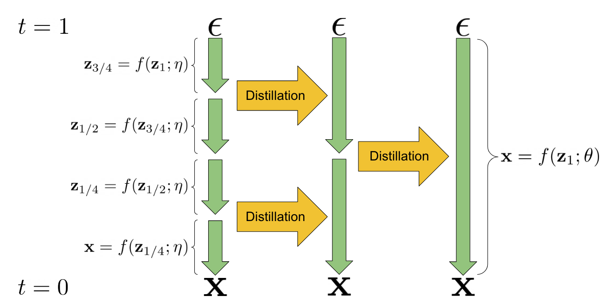
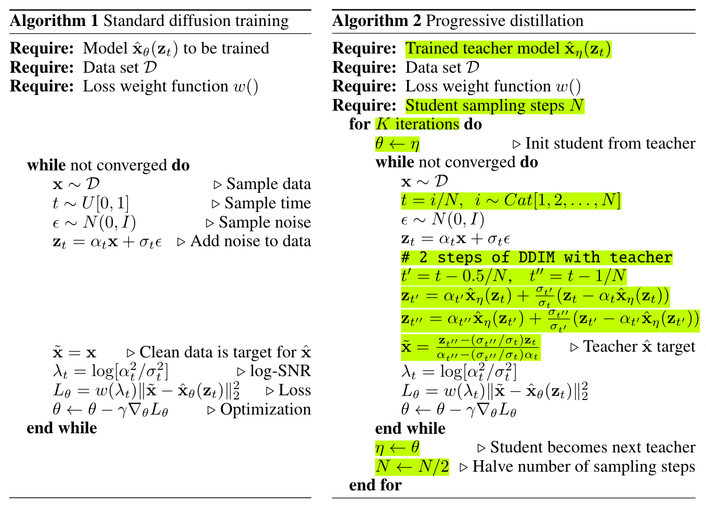
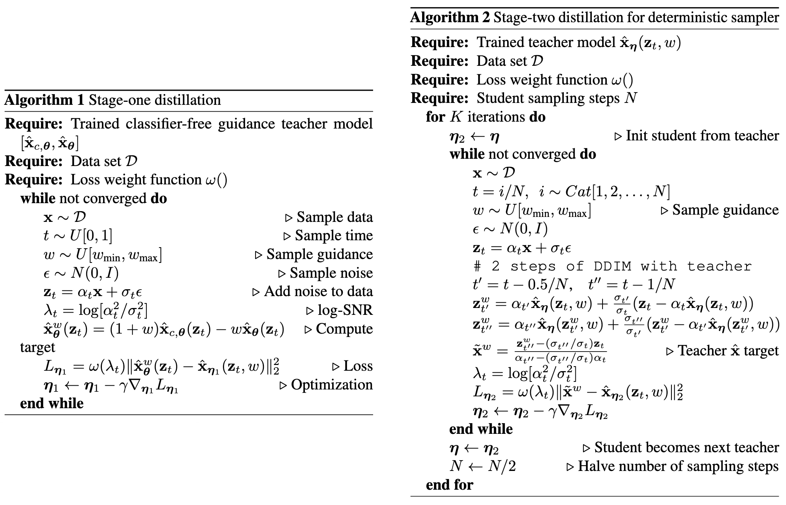
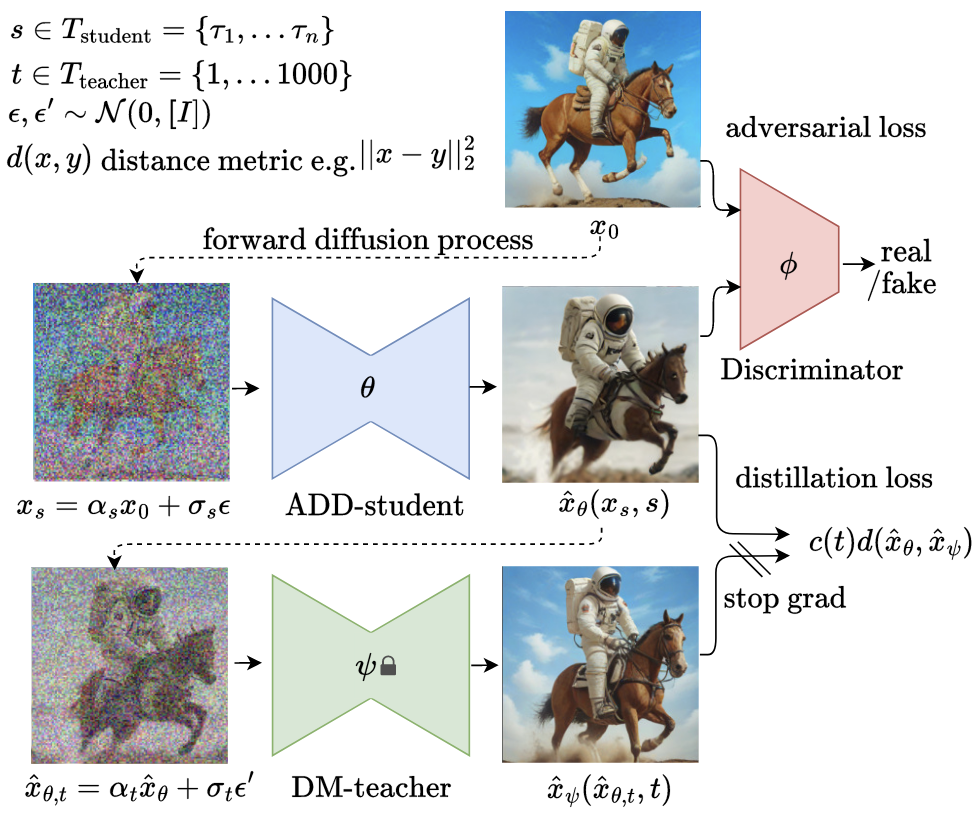
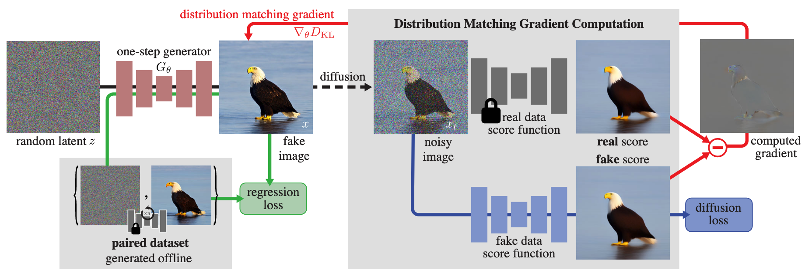
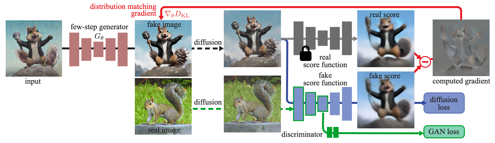

Diffusion Distillation
Introduction
尽管扩散模型在生成质量、似然估计和训练稳定性上表现出卓越的性能，但其最大的缺点就是采样耗时。为此，许多采样器被提出以加速采样过程，例如 DDIM, Analytic-DPM, PNDM, DPM-Solver 等等，它们着眼于更精确地求解扩散 ODE，例如采用高阶的求解器并充分利用扩散 ODE 的特殊结构。然而，受制于模型本身的误差，此类 training-free 的方法再精确也难以做到 10 步以内的高质量生成。
随着领域的发展，如今开源/闭源界已经训练了许多高质量的扩散模型，这使得在已有模型的基础上蒸馏一个新的模型成为了不错的方案。所谓蒸馏，即训练一个 student 模型，其一步去噪的效果相当于原 teacher 模型多步去噪的效果。相比优化采样器的方法，基于蒸馏的方法往往能够实现 4 步、2 步甚至 1 步采样，彻底解决扩散模型采样耗时的问题。
一个自然的问题是，为什么蒸馏可以 work？换句话说，为什么我们不直接在较少步数上训练模型，偏偏要在较多步数上训练之后再蒸馏，这难道不是多此一举吗？这是因为，扩散模型的训练流程是依靠不断采样、每次拟合一个 \(\mathbf x_0\) 的方式来拟合 \(\mathbb E[\mathbf x_0\vert\mathbf x_t]\)，这种训练方式的方差很大，直观上 loss 曲线非常振荡。而蒸馏时 teacher 模型给出的监督信号本就是对 \(\mathbb E[\mathbf x_0\vert\mathbf x_t]\) 的近似，所以蒸馏损失的方差显著降低，训练过程更平稳，模型更容易收敛。当然，蒸馏虽然减少了方差，但 teacher 模型对 \(\mathbb E[\mathbf x_0\vert\mathbf x_t]\) 的估计是有偏差的，所以这里存在 bias-variance trade-off.
Progressive Distillation
Progressive Distillation (PD) 的基本思想是每次蒸馏将采样步数缩短到原来的一半，如此进行 \(\log_2 N\) 次迭代，就可以把 \(N\) 步采样模型蒸馏为一步采样模型，如下图所示。

具体而言，假设有一个 teacher 扩散模型 \(\mathbf x_\eta(\cdot)\)，我们希望从中蒸馏一个 student 模型 \(\mathbf x_\theta(\cdot)\)，使其一步去噪相当于 teacher 模型两步去噪的效果。为此，首先采样 \(\mathbf x\sim\mathcal D,\,\mathbf x_t\sim q_{t\vert0}(\mathbf x_t\vert\mathbf x)\)，然后用 teacher 模型实施两步 DDIM 去噪，得： \[ \begin{gather} \mathbf x_{t'}=\alpha_{t'}\mathbf x_\eta(\mathbf x_t)+\frac{\sigma_{t'}}{\sigma_t}(\mathbf x_t-\alpha_t\mathbf x_\eta(\mathbf x_t))\\ \mathbf x_{t''}=\alpha_{t''}\mathbf x_\eta(\mathbf x_{t'})+\frac{\sigma_{t''}}{\sigma_{t'}}(\mathbf x_{t'}-\alpha_{t'}\mathbf x_\eta(\mathbf x_{t'})) \end{gather} \] 对于 student 模型，我们希望它一步去噪就能得到 \(\mathbf x_{t''}\)，即： \[ \mathbf x_{t''}=\alpha_{t''}\mathbf x_\theta(\mathbf x_t)+\frac{\sigma_{t''}}{\sigma_t}(\mathbf x_t-\alpha_t\mathbf x_\theta(\mathbf x_t)) \] 整理得： \[ \mathbf x_\theta(\mathbf x_t)=\frac{\mathbf x_{t''}-(\sigma_{t''}/\sigma_t)\mathbf x_t}{\alpha_{t''}-(\sigma_{t''}/\sigma_t)\alpha_t} \] 因此右边就是 student 模型的拟合目标，故可构造损失函数： \[ \mathcal L(\theta)=\mathbb E_{\mathbf x,\boldsymbol\epsilon,t,t',t''}\left[ w_t\left\Vert\mathbf x_\theta(\mathbf x_t)-\frac{\mathbf x_{t''}-(\sigma_{t''}/\sigma_t)\mathbf x_t}{\alpha_{t''}-(\sigma_{t''}/\sigma_t)\alpha_t}\right\Vert_2^2 \right] \] 待 student 模型收敛后就完成了一轮蒸馏。我们选择 \(t',t''\) 使得每轮蒸馏减少一半的采样步数，那么迭代执行多轮蒸馏即可指数式地减少采样步数，算法流程图如下所示（符号略有不同，左侧是扩散模型的训练流程，右侧是 Progressive Distillation 的训练流程）：

Guided Diffusion Distillation
Classifier-Free Guidance (CFG) 是提升扩散模型采样质量的重要技术，因此我们希望蒸馏时不仅仅是蒸馏原扩散模型，而是蒸馏施加 CFG 之后的结果。Guided Diffusion Distillation 一文提出了两阶段的解决方案：首先训练一个多步扩散模型学习 Guidance 之后的结果，然后用 Progressive Distillation 将其蒸馏为一步/少步模型。
在第一阶段中，设有 teacher 模型 \(\mathbf x^\text{u}_\theta(\cdot),\,\mathbf x^\text{c}_\theta(\cdot)\)，其中上标 \(\text{u},\text{c}\) 分别表示无条件模型和有条件模型，则施加 CFG 后的模型为： \[ \mathbf x_\theta^\omega(\mathbf x_t){\;\mathrel{\vcenter{:}}=\;}(1-\omega)\mathbf x_\theta^\text{u}(\mathbf x_t)+\omega\mathbf x_\theta^\text{c}(\mathbf x_t) \] 其中 \(\omega\) 是 CFG scale. 我们训练一个 student 模型 \(\mathbf x_{\eta_1}(\cdot,\omega)\) 去拟合 CFG 后的结果： \[ \mathcal L(\eta_1)=\mathbb E_{\mathbf x,\boldsymbol\epsilon,t,\omega}\left[w_t\left\Vert\mathbf x_{\eta_1}(\mathbf x_t,\omega)-\mathbf x_\theta^\omega(\mathbf x_t)\right\Vert_2^2\right] \] 注意我们将 CFG scale 作为条件给到 student 模型，并在训练时采样一定范围内 \([\omega_\min,\omega_\max]\) 的各种 scale，使得 student 模型同时学习多种 CFG scale 下的结果。实现上，CFG scale 经由 Fourier embedding 编码，与时间步合并输入给模型；另外，student 模型以 teacher 模型的权重初始化，有利于快速收敛。
第一阶段结束后，采用 Progressive Distillation 技术将多步扩散模型 \(\mathbf x_{\eta_1}(\cdot,\omega)\) 渐进式蒸馏为少步模型 \(\mathbf x_{\eta_2}(\cdot,\omega)\) 即可。两阶段的算法流程图如下所示（符号略有不同，尤其是论文的 CFG scale 与本文的 CFG scale 相差 1，请读者仔细甄别）：

Consistency Distillation
Consistency Distillation (CD) 是训练 consistency model 的一种方式，详见 Consistency Models 一文。
Adversarial Diffusion Distillation
对抗训练作为一种通用的数据分布建模方法，非常适合一步/少步生成的需求。然而，从头训练一个大规模 GAN 是臭名昭著的困难与不稳定。不过，把对抗训练作为蒸馏扩散模型的一项辅助损失却是非常不错的选择——一方面，蒸馏损失可以保证训练的稳定性；另一方面，对抗损失可以提高一步生成的分布匹配能力。基于这种思想，Adversarial Diffusion Distillation (ADD) 一文将对抗训练融入了扩散模型蒸馏中，实现了 1-4 步生成高质量的 T2I 图像。

如图所示，在训练过程中，ADD 的 student 模型由带噪数据 \(\mathbf x_s\) 一步生成样本 \(\hat{\mathbf x}_\theta(\mathbf x_s,s)\)，该生成样本与真实样本给到判别器进行对抗训练；同时，生成的样本将被重新加噪至 \(\hat{\mathbf x}_{\theta,t}\) 并与 teacher 模型的去噪结果 \(\hat{\mathbf x}_\psi(\hat{\mathbf x}_{\theta,t},t)\) 做重构训练。具体而言，判别器由一个冻结的预训练 ViT 和若干判别头 \(D_{\phi,k}\) 组成，其中第 \(k\) 个判别头接在 ViT 的第 \(k\) 层特征 \(F_k\) 上。生成器采用 hinge loss 作为对抗损失： \[ \mathcal L_\text{adv}^\text{G}(\hat{\mathbf x}_\theta(\mathbf x_s,s))=-\sum_k D_{\phi,k}(F_k(\hat{\mathbf x}_\theta(\mathbf x_s,s))) \] 而判别器的损失为： \[ \begin{align} \mathcal L_\text{adv}^\text{D}(\mathbf x,\hat{\mathbf x}_\theta(\mathbf x_s,s))&=\sum_k\max(0,1-D_{\phi,k}(F_k(\mathbf x)))+\gamma\text{R1}(\phi)\\&+\sum_k\max(0,1+D_{\phi,k}(F_k(\hat{\mathbf x}_\theta(\mathbf x_s,s)))) \end{align} \] 其中 \(\text{R1}(\phi)\) 表示 R1 梯度惩罚项。蒸馏损失为： \[ \mathcal L_\text{distill}(\hat{\mathbf x}_\theta(\mathbf x_s,s))=\mathbb E_{\boldsymbol\epsilon',t}\left[c(t)d(\hat{\mathbf x}_{\theta,t},\hat{\mathbf x}_\psi(\hat{\mathbf x}_{\theta,t},t))\right] \] 其中 \(\hat{\mathbf x}_{\theta,t}=\alpha_t\hat{\mathbf x}_\theta(\mathbf x_s,s)+\sigma_t\boldsymbol\epsilon'\)，\(d(\cdot,\cdot)\) 为度量函数。二者加权构成最终损失： \[ \mathcal L(\theta)=\mathbb E_{\mathbf x,\boldsymbol\epsilon,s}\left[\mathcal L_\text{adv}^\text{G}(\hat{\mathbf x}_\theta(\mathbf x_s,s))+\lambda\mathcal L_\text{distill}(\hat{\mathbf x}_\theta(\mathbf x_s,s))\right] \] 特别地，对于隐空间模型，蒸馏损失既可以施加在 latent 上，也可以施加在 pixel 上，实验发现后者更加稳定。
Distribution Matching Distillation
Distribution Matching Distillation (DMD) 的基本思想是：当我们蒸馏一个多步扩散模型到一个一步生成模型时，不必要求一步模型的起始噪声与终点样本与多步模型的相同，只需要一步模型生成的样本在分布层面与多步模型的相同即可。具体而言，借用 GANs 的术语，将一步模型生成的样本称作 fake 样本，多步模型生成的样本称作 real 样本，那么我们的目标是最小化二者分布的 KL 散度： \[ D_\text{KL}(p_\text{fake}\Vert p_\text{real})=\mathbb E_{p_\text{fake}(\mathbf x)}\left[\log\frac{p_\text{fake}(\mathbf x)}{p_\text{real}(\mathbf x)}\right]=\mathbb E_{\mathbf z\sim\mathcal N(\mathbf0,\mathbf I),\\\mathbf x=G_\theta(\mathbf z)}[\log p_\text{fake}(\mathbf x)-\log p_\text{real}(\mathbf x)] \] 其中 \(G_\theta\) 表示我们要训练的一步生成模型。计算对数概率密度一般不现实，但我们只需要求上式关于 \(\theta\) 的梯度： \[ \nabla_\theta D_\text{KL}(p_\text{fake}\Vert p_\text{real})=\mathbb E_{\mathbf z\sim\mathcal N(\mathbf0,\mathbf I),\mathbf x=G_\theta(\mathbf z)}\left[\left(\mathbf s_\text{fake}(\mathbf x)-\mathbf s_\text{real}(\mathbf x)\right)\frac{\mathrm dG_\theta(\mathbf z)}{\mathrm d\theta}\right] \] 其中 \(\mathbf s_\text{real}(\mathbf x)=\nabla_{\mathbf x}\log p_\text{real}(\mathbf x),\,\mathbf s_\text{fake}(\mathbf x)=\nabla_{\mathbf x}\log p_\text{fake}(\mathbf x)\) 表示 score function. 直观上，\(\mathbf s_\text{real}(\mathbf x)\) 一项让模型生成的样本朝 \(p_\text{real}\) 更高的地方移动，而 \(-\mathbf s_\text{fake}(\mathbf x)\) 一项让生成样本远离 \(p_\text{fake}\) 高的地方，当 fake 样本越来越真时，二者逐渐抵消，模型收敛。这与 Contrastive Divergence 有着异曲同工之妙。
现在我们只需估计 \(\mathbf s_\text{real}(\mathbf x)\) 与 \(\mathbf s_\text{fake}(\mathbf x)\) 即可。对于 \(\mathbf s_\text{real}(\mathbf x)\)，我们希望用预训练的扩散模型去估计。然而，由于 \(\mathbf x\) 采样自 \(p_\text{fake}\)，预训练扩散模型无法给出一个准确的估计。借鉴 ScoreSDE 的做法，我们对其加以噪声扰动 \(\mathbf x_t=\alpha_t\mathbf x+\sigma_t\boldsymbol\epsilon\)，并估计扰动后的 score： \[ \mathbf s_\text{real}(\mathbf x_t,t)=-\frac{\mathbf x_t-\alpha_t\boldsymbol\mu_\text{base}(\mathbf x_t,t)}{\sigma_t^2} \] 其中 \(\boldsymbol\mu_\text{base}(\mathbf x_t,t)\) 表示预训练的扩散模型。对于 \(\mathbf s_\text{fake}(\mathbf x)\)，由于一步生成模型在不断更新，我们同步学习其 score function： \[ \begin{gather} \mathbf s_\text{fake}(\mathbf x_t,t)=-\frac{\mathbf x_t-\alpha_t\boldsymbol\mu_\text{fake}^\phi(\mathbf x_t,t)}{\sigma_t^2}\\ \mathcal L_\text{denoise}(\phi)=\mathbb E_{\mathbf z,\mathbf x,t,\mathbf x_t}\left[\Vert\boldsymbol\mu_\text{fake}^\phi(\mathbf x_t,t)-\mathbf x\Vert_2^2\right] \end{gather} \] 其中 \(\boldsymbol\mu_\text{fake}^\phi(\mathbf x_t,t)\) 是与一步生成模型同步学习的扩散模型。于是，对于 \(t\) 时刻的带噪分布，有： \[ \begin{align} \nabla_\theta D_\text{KL}(p_\text{fake}\Vert p_\text{real})&=\mathbb E_{\mathbf z,t,\mathbf x_t}\left[(\mathbf s_\text{fake}(\mathbf x_t,t)-\mathbf s_\text{real}(\mathbf x_t,t))\frac{\mathrm d\mathbf x_t}{\mathrm d\theta}\right]\\ &=\mathbb E_{\mathbf z,t,\mathbf x_t}\left[(\mathbf s_\text{fake}(\mathbf x_t,t)-\mathbf s_\text{real}(\mathbf x_t,t))\frac{\mathrm d\mathbf x_t}{\mathrm dG_\theta(\mathbf z)}\frac{\mathrm dG_\theta(\mathbf z)}{\mathrm d\theta}\right]\\ &=\mathbb E_{\mathbf z,t,\mathbf x_t}\left[\alpha_t(\mathbf s_\text{fake}(\mathbf x_t,t)-\mathbf s_\text{real}(\mathbf x_t,t))\frac{\mathrm dG_\theta(\mathbf z)}{\mathrm d\theta}\right]\\ &\simeq\,\mathbb E_{\mathbf z,t,\mathbf x_t}\left[w_t\alpha_t(\mathbf s_\text{fake}(\mathbf x_t,t)-\mathbf s_\text{real}(\mathbf x_t,t))\frac{\mathrm dG_\theta(\mathbf z)}{\mathrm d\theta}\right]\\ \end{align} \] 其中 \(w_t\) 是不改变最优解的权重，用于平衡不同时间步下的梯度大小，设置为 \(w_t=\frac{\sigma_t^2}{\alpha_t}\frac{CS}{\Vert\boldsymbol\mu_\text{base}(\mathbf x_t,t)-\mathbf x\Vert_1}\)，其中 \(C,S\) 分别表示 channels 数量与空间位置数量。作者构造了如下损失，使其梯度为上式： \[ \mathcal L_\text{KL}(\theta)=\mathbb E_{\mathbf z,t,\mathbf x_t}\left[\frac{1}{2}\Big\Vert G_\theta(\mathbf z)-\text{sg}\big[G_\theta(\mathbf z)-(w_t\alpha_t(\mathbf s_\text{fake}(\mathbf x_t,t)-\mathbf s_\text{real}(\mathbf x_t,t)))\big]\Big\Vert_2^2\right]\\ \] 然而，仅仅依靠 KL 散度依旧不够：当 \(t\) 接近 0 时，\(p_\text{real}(\mathbf x_t,t)\) 接近 0，导致 \(\mathbf s_\text{real}(\mathbf x_t,t)\) 的估计误差很大；另外，作者发现优化结果容易发生 mode collapse/dropping. 为了解决这个问题，作者进一步引入了回归损失：利用预训练的扩散模型生成若干噪声-样本对 \(\mathcal D=\{\mathbf z,\mathbf y\}\) 作为标签去训练一步生成模型： \[ \mathcal L_\text{reg}(\theta)=\mathbb E_{(\mathbf z,\mathbf y)\sim\mathcal D}[\text{LPIPS}(G_\theta(\mathbf z),\mathbf y)] \] 综上，一步生成模型的总损失为： \[ \mathcal L(\theta)=\mathcal L_\text{KL}(\theta)+\lambda_\text{reg}\mathcal L_\text{reg}(\theta) \] 同时用 \(\mathcal L_\text{denoise}(\phi)\) 训练估计 fake 样本 score function 的扩散模型。方法示意图如下：

Improved Distribution Matching Distillation
在 DMD 中的回归损失需要事先用预训练扩散模型生成一批噪声-样本对作为数据，这对于大规模文生图模型而言是相当昂贵的。因此，作者在改进工作 DMD2 中希望摒弃这个回归损失。但直接丢弃该损失会使得生成样本的统计量（例如平均亮度）剧烈震荡。作者认为这是同步学习的 \(\boldsymbol\mu_\text{fake}\) 不够精确导致的。为此，作者借鉴 GANs 中的常用技巧，每更新 5 次 \(\boldsymbol\mu_\text{fake}\) 才更新 1 次 \(G_\theta\). 实验证明这样做即可稳定训练，且效果与原 DMD 持平。
进一步地，由于 DMD 不使用真实数据，因此其效果的上限永远无法超过 teacher 模型。为此，作者引入了一个额外的 GAN 损失，其中判别器 \(D\) 实现为在 fake 扩散模型的 bottleneck 处引出一个分类头。GAN 损失采用经典的 non-saturing 目标： \[ \mathcal L_\text{GAN}=\mathbb E_{\mathbf x,t}[\log D(F(\mathbf x,t))]+\mathbb E_{\mathbf z,t}[-\log D(F(G_\theta(\mathbf z),t))] \] 其中 \(F\) 表示扩散模型的前向加噪操作。相比回归损失，GAN 损失的引入也与 DMD 的分布匹配理念更加贴合。
另外，对于较大规模的文生图模型，将其蒸馏为一步生成模型依旧存在困难，因此作者将 DMD 扩展到多步采样场景下。具体而言，其多步采样的做法与 Consistency Models 相同，即去噪、加噪反复交替执行。特别地，在带噪图像上训练时，输入的带噪图像来自于生成器自身的多步采样过程、而非真实图像加噪，这样能弥补 train-test gap，提升效果。
综上，DMD2 的方法示意图如下：
